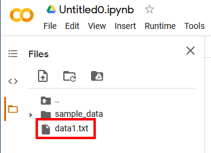
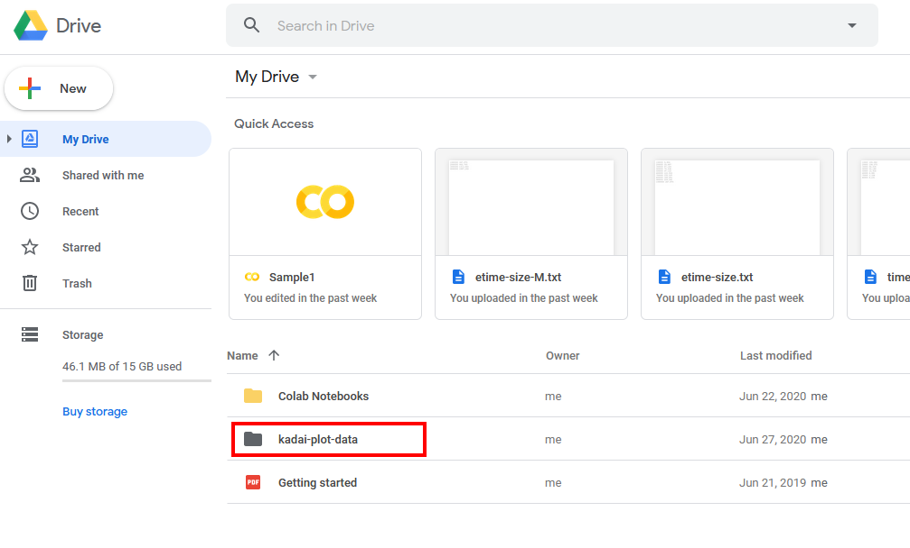
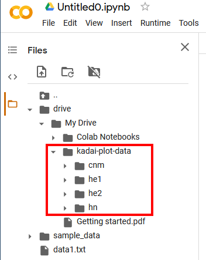

雑談
政治とは何か?
- 「限られた資源 (物資・場所・時間) を複数の人で分ける」ことを考える:
- 力ずくで解決する方法 (野生状態)
- カネまたは物々交換で解決する方法 (経済)
- 話し合いで解決する方法 (政治)
- 基本的には、政治とは「調停」である。
- 公平でなければならない。「公平」って何?
- 部室のロッカーを誰が使うか決める。
年長者であればエラいのか? - 誰が大学入試で合格するか決める。
推薦入学は公平か? 視覚障害者の点字受験は公平か? - 「能力のある人間は報われる」のは本当か?
実際には裕福な家庭に生まれた人がトクをしているのでは?
世帯所得と子どもの学歴。
裕福な家の子の知能指数 (IQ) は高い。
- 部室のロッカーを誰が使うか決める。
- 世の中のすべてはある意味「政治」である。
- 「安くていいものが好き」 →
ロシアと仲良くして安い原油を輸入せよ。
外国人をもっと日本に増やし、日本人と同等に扱え。
- 「自販機は超便利だ」
「エアコンがないと生きていけない」 →
原発を東京都に建てろ。
温暖化とか気候変動は忘れろ。
- 「Amazonは便利だ」
「安定した大企業に就職したい」
「実力のある奴が出世するのは当然」 →
金持ちはますます金持ちになり、貧しい人は一生貧しい世界。
- 「安くていいものが好き」 →
選挙に行きましょう
- 年寄りの有権者のほうが数は多い。 → つまり、彼らの意見で自分たちの将来が決まってしまう。
- にもかかわらず、若い人は投票に行かない。
よくある誤解
- 誰に投票すればいいんだかわからない。
→ 一個でも気に入った点があれば投票してOK。 - 投票した候補が落選したら意味ない。
→ 実際には、候補を当選させても細かい選択などできない。選挙のおもな役割は、 得票数を上げて政治家・役人に「自分たちは見ているぞ」と思わせること。 - 自分には選挙権がない。
→ 選挙は政治の一部分にすぎない。実際の政治とは「意見形成のプロセス」であり、 たとえ投票しなくとも、以下のことをすれば政治活動をしていることになる:- 特定のニュースについて他人と話すこと。
ちなみに報道の自由度ランキングでは、日本はアジアの他の国よりもかなり下である。「正確な報道」をマスコミに求めよう。 - ものを買う = 「おカネで投票する」ことである。
- 人と意見が違う部分を明らかにすること (人と意見が違うのは恥ずかしくない)。
- 特定のニュースについて他人と話すこと。
- 結局、ぜんぶインチキなんじゃないか?
→ 悪い人間はたしかに存在している。が、よい人間もまた確かに存在する。 自分が「よい」と思える世界を目指そう。
0. 前回までのあらすじ
- ターミナルの使い方を学習した。
- 長いパス名を省略する方法として、 カレントディレクトリという考え方を学習した。
- matplotlib でグラフを描いてみた。
演習 3-1. (前回の復習)
- テキスト形式のファイルの拡張子を答えよ。
-
dirまたはlsコマンドは何をするか? - カレントディレクトリを変更するコマンド名は何か?
1. Excel入門
- Excel は、表計算をおこなうアプリである。
- 各セルに、文字または数値を入力する。
- 数式バー に計算式を入力すると、結果が自動的に計算される。
例:-
=SUM(B2:D2)(セルB2からD2 までの合計) -
=AVERAGE(B2:B3)(セルB2からB3 までの合計)
-
- 名前ボックスでセルの名前を確認。
{kind=link}
1.1. Excel で重要なこと
各セルには、データまたは数式が入っている。 数式の場合、一見すると本物の数値と区別がつかないので、 このような場合は 数式の表示 を使う。
{kind=link}
1.2. テーブルを作る
データが入力されている一定の範囲を指定してテーブルと呼ばれる領域を 作ることができる。すると、データによる並べ替えが簡単にできる。
{kind=link}
1. 相対パス名とは?
1.1. カレントディレクトリとは (復習)
- 長いパス名を入力しなくてすむように、
いま注目しているフォルダ を切り替えて操作する。
/Applications/Safari.app/Contents/MacOS/...1.2. 絶対パス名と相対パス名
実は「パス名」と呼ばれているものには 2つの種類がある。 前回の授業でいう「パス名」は、「絶対パス名」のことであった。
- 絶対パス名: ディスクの先頭からみたパス名。
- 相対パス名: カレントディレクトリからみたパス名。
- フォルダ X の位置…
- 絶対パス名:
/A/E/X - 相対パス名:
./X
- 絶対パス名:
1.3. 相対パス名の表し方
- 相対パス名では、カレントディレクトリの位置を
「.(ドット)」で表す:./X,./Kなど - さらに、相対パス名では、ひとつ「上の」フォルダを
「..」で表せる。 - 相対パス名の能力は、絶対パス名と等価である。
つまり、絶対パスで表せるどんな位置も相対パス名によって表すことができる。
例:../../../../../../../Application=/Application
演習 3-2. 相対パスの練習カレントディレクトリが
Eのとき…- フォルダ
Aへの相対パス名は? - ファイル
Hへの相対パス名は? - ファイル
Kへの相対パス名は? (2つある)
演習3-3. コマンドで相対パスを使う- ターミナルを開き、
cdコマンドを入力して 自分のホームフォルダに移動せよ。 - デスクトップに新規フォルダを作り、その中に
cdコマンドを利用してカレントディレクトリを変更せよ。 - 相対パス名のみを使って、そこから以下のフォルダに移動せよ:
- Windowsの場合:
C:\Windowsフォルダ - Macの場合:
/Applicationフォルダ
cdコマンドを実行したか? - Windowsの場合:
- その場所から、
dir/lsコマンドに相対パス名を与え、 自分のホームフォルダの一覧を表示させよ。
2. ターミナルで使うと便利なコマンド
以下の例における
>や%は 実際に入力する文字ではなく、各行に毎回表示される プロンプト ("C:\Users\euske>" や "euske@shinyama-macbook ~ %" など) を表す。- Windowsの場合:
-
> start パス名 (絶対または相対)指定したパス名のフォルダをエクスプローラーで開く。 -
> ren 旧パス名 新パス名ファイルの名前を変更する。 -
> copy 元パス名 新パス名ファイルを別名でコピーする。 -
> del パス名ファイルを削除する。 (ゴミ箱と違い、一瞬で削除されるので注意!)
-
- Macの場合:
-
% open パス名 (絶対または相対)指定したパス名のフォルダをFinderで開く。 -
% mv 旧パス名 新パス名ファイルの名前を変更する。 -
% cp 元パス名 新パス名ファイルを別名でコピーする。 -
% rm パス名ファイルを削除する。 (ゴミ箱と違い、一瞬で削除されるので注意!)
-
演習3-4. コマンドによるファイル操作コマンド プロンプトまたはターミナルを起動し、以下の操作を実行せよ: (注意: 各コマンドは、成功したときには何も表示しない)
- カレントフォルダをデスクトップに移動し、
start .またはopen .と入力せよ。 何が起こるか? - デスクトップに適当なテキストファイルを作成し、
ren/mvコマンドを使って そのファイル名を変更せよ。 -
copy/cpコマンドを使って、 そのファイルを別の名前でコピーせよ。 -
del/rmコマンドを使って、 そのファイルを削除せよ。
3. matplotlibつづき
matplotlib の本当の使い方は sin(x) などのグラフを描くことではなく、 実験データをプロットすることである。ここでは、外部から テキスト形式のデータを与えることで、任意のグラフを描画する。
演習3-5. データを使ったグラフ描画- 以下のようなテキストファイルを作成し、
これを
data1.txtという名前で保存する:1 10 2 40 3 25 4 100 5 60
- Google Colab を開き、
このテキストファイルを画面左側の
ファイル一覧部分にドラッグ・ドロップする。
(こうすると matplotlib のプログラムにファイルを読ませることができる)
(Jupyter Notebook を使っている場合は、ファイルdata1.txtを ホームフォルダ (Notebookファイルが入っているフォルダ) の中に置けばよい。) - 以下のプログラムを matplotlib で入力・実行する:
正しく動いていれば、以下のようなグラフが表示されるはずである:import numpy as np import matplotlib.pyplot as plt a = np.genfromtxt("./data1.txt") plt.plot(a[:,0], a[:,1], label="data1", color="blue") a = np.genfromtxt("./data1.txt") plt.bar(a[:,0], a[:,1], label="data1", color="red") plt.title("Simple Plot") plt.xlabel("x label") plt.ylabel("y label") plt.legend() plt.savefig("./plot1.png") plt.show()
-
data1.txtを開いて中の値を適当に書き換え、 グラフを再描画させて内容が変化していることを確認する。
3.1. matplotlib のプログラム解説
上の演習 3-5. で使った matplotlib プログラムを簡単に解説する。
まず、最初の2行は、とにかく必要。
次にプロットを描く部分が続く。 これは基本的に、以下の繰り返しである。 まず、どのファイルをデータとして使うか (import numpy as np import matplotlib.pyplot as plt
./data1.txt) を指定し、 そのプロットの名前 (data1)、 および線の色 (blue) を指定している。 ファイルの指定には相対パスが使われる。
次の部分は前とほとんど同じだが、a = np.genfromtxt("./data1.txt") plt.plot(a[:,0], a[:,1], label="data1", color="blue")plotの部分がbarに 変わっている。こうすると折れ線グラフではなく、棒グラフが描かれる。
最後に、グラフの題名を「a = np.genfromtxt("./data1.txt") plt.bar(a[:,0], a[:,1], label="data1", color="red")Simple Plot」、 X軸、Y軸の表示をそれぞれ「x label」「y label」に設定し、 完成したグラフを./plot1.pngというファイル名で保存する。 このときのファイル名も実は相対パス名である。plt.title("Simple Plot") plt.xlabel("x label") plt.ylabel("y label") plt.legend() plt.savefig("./plot1.png") plt.show()Excel と matplotlib の違い
- Excel: データが与えられたあと、グラフの描き方を決めるのは人間 (の操作)。
- matplotlib:
同じプログラムを使えば、誰がやっても同じグラフができあがる。
3.2. 論文の実験データを使ってグラフを描画する
つぎに、クラス共通課題の 論文で使われる 本物のグラフを作成しよう。 まず、図 5. 「実行時間比較」から始めることにする。
演習3-6. 本格的なグラフ描画- まず元データをダウンロードする。
このファイルは Zip形式 であり、複数のファイル(フォルダ) が圧縮されている:
kadai-plot-data.zip
(このデータに関する説明は 実習に用いるデータセット のページにある) - ダウンロードした Zip ファイルを開き、
kadai-plot-dataというフォルダをデスクトップに移動する。
(Macの場合は、自動的に開かれる。) - 次に Google Drive を開き、
ここに取り出した
kadai-plot-dataフォルダをドラッグ・ドロップする。 これにより、フォルダの中身が Google Drive にアップロード (送信) される。 注意: zipファイルの中から直接 kadai-plot-data をドラッグ・ドロップしないこと。 必ず一度、デスクトップ上に出してからでないと、うまく動かない。 - ふたたび Google Colab を開き、
「Google Drive アイコン (
 )」をクリックすると、
ファイル一覧部分に先ほどアップロードした
)」をクリックすると、
ファイル一覧部分に先ほどアップロードした kadai-plot-dataフォルダが 表示されているはずである。このフォルダの相対パス名は./drive/My Drive/kada-plot-dataである。 - 以下のプログラムを matplotlib で入力・実行する:
正しく動いていれば、以下のようなグラフが表示されるはずである:import numpy as np import matplotlib.pyplot as plt a = np.genfromtxt("./drive/My Drive/kadai-plot-data/cnm/etime-size.txt") plt.plot(a[:,0], a[:,1], label="CNM", linestyle="-.", color="black") a = np.genfromtxt("./drive/My Drive/kadai-plot-data/he2/etime-size.txt") plt.plot(a[:,0], a[:,1], label="HE'", linestyle=":", color="black") a = np.genfromtxt("./drive/My Drive/kadai-plot-data/he1/etime-size.txt") plt.plot(a[:,0], a[:,1], label="HE", linestyle="--", color="black") a = np.genfromtxt("./drive/My Drive/kadai-plot-data/hn/etime-size.txt") plt.plot(a[:,0], a[:,1], label="HN", linestyle="-", color="black") plt.xlabel("Size of Social Network") plt.ylabel("Elapsed Time [sec]") plt.legend() plt.show()
4. 本日のまとめ・小課題
- 絶対パス名と相対パス名について学習した。
- 実際のデータを使ってグラフを描く方法を学習した。
小課題3. 論文のグラフ 図6 を描画する (7月4日締切)- 締め切り: 7月4日 (1週間後)
- 演習 3-6. でやったグラフを修正して、以下のようなグラフ
(論文の図6) を描け。
このときの matplotlib のプログラム (画像ファイルではない) を
テキストファイルで提出せよ。
ファイル名は
fig6.txtとすること。
演習 3-6. のグラフとの違い:
- 前のグラフでは 4つのプロット (CNM, HE', HE, HN) を 描いていたが、今回のプロットは 3つ (HE', HE, HN) である。
- 前のグラフでは
cnm,hn2,hn1,hnの 各フォルダにあるetime-size.txtというデータを使ってプロットしていたが、 今回のプロットは各フォルダにあるetime-size-M.txtというデータを 使ってプロットすること。
ここで作成したグラフは、今後の課題でも利用するので 着実に完成させよう。